5 Data Visualization
There are a two main types of data visualization: (i) exploratory and (ii) expository. In exploratory data visualization, you are just checking out your data – you just want to see what it looks like – you are just making something for yourself or close collaborators. It is okay for these graphics to be imperfect, but they still must be unambiguous. However, in expository data visualization, you already know the main take-aways of your results, and therefore, you are attempting to describe something specific to your audience. This is an entirely different skill and requires a draft and revision process, so that your take-away message is clear. In this tutorial, we will talk a little about both types of data visualization.
5.1 Fundamentals of Data Visualization
I cannot recommend the Fundamentals of Data Visualization enough. The first two paragraphs excerpted below:
Data visualization is part art and part science. The challenge is to get the art right without getting the science wrong and vice versa. A data visualization first and foremost has to accurately convey the data. It must not mislead or distort. If one number is twice as large as another, but in the visualization they look to be about the same, then the visualization is wrong. At the same time, a data visualization should be aesthetically pleasing. Good visual presentations tend to enhance the message of the visualization. If a figure contains jarring colors, imbalanced visual elements, or other features that distract, then the viewer will find it harder to inspect the figure and interpret it correctly. In my experience, scientists frequently (though not always!) know how to visualize data without being grossly misleading. However, they may not have a well developed sense of visual aesthetics, and they may inadvertantly make visual choices that detract from their desired message. Designers, on the other hand, may prepare visualizations that look beautiful but play fast and loose with the data. It is my goal to provide useful information to both groups.
When you are creating a visualization of your data it is important to know that there are many types of visualizations from which you can choose.
This the first step of data visualization – choosing the right visualization. I think this is best done the old fashioned way – with a pen and a paper. You write down the various variables and factors involved in your experimental design – and then sketch a figure of your results as if your experiment has supported your alternative hypothesis.
5.2 ggplot2
The ggplot2 package is likely one of the most popular packages in R. It is actually the reason why some researchers use R – to make publication-ready figures. ggplot2 gets its name from the “Grammer of Graphics”.
For a complete introduction to
ggplot2, check out theggplot2: Elegant Graphics for Data Analysis book.
ggplot2 creates things in a specific order of layers.
For now, it is important to note that the plots within ggplot2 are made up of data and mapping – which is to say the actually data-stuff you want to plot, and then the code of how you want it to look. There are a several things that go into the aesthetic mapping, but we will talk about them as they come up.
We are going to use the starwars built-in data set to explore some plotting.
# Check out the starwars data
glimpse(starwars)
# Rows: 87
# Columns: 14
# $ name <chr> "Luke Skywalker", "C-3PO", "R2-D2", "Darth Vader", "Leia Or…
# $ height <int> 172, 167, 96, 202, 150, 178, 165, 97, 183, 182, 188, 180, 2…
# $ mass <dbl> 77.0, 75.0, 32.0, 136.0, 49.0, 120.0, 75.0, 32.0, 84.0, 77.…
# $ hair_color <chr> "blond", NA, NA, "none", "brown", "brown, grey", "brown", N…
# $ skin_color <chr> "fair", "gold", "white, blue", "white", "light", "light", "…
# $ eye_color <chr> "blue", "yellow", "red", "yellow", "brown", "blue", "blue",…
# $ birth_year <dbl> 19.0, 112.0, 33.0, 41.9, 19.0, 52.0, 47.0, NA, 24.0, 57.0, …
# $ sex <chr> "male", "none", "none", "male", "female", "male", "female",…
# $ gender <chr> "masculine", "masculine", "masculine", "masculine", "femini…
# $ homeworld <chr> "Tatooine", "Tatooine", "Naboo", "Tatooine", "Alderaan", "T…
# $ species <chr> "Human", "Droid", "Droid", "Human", "Human", "Human", "Huma…
# $ films <list> <"The Empire Strikes Back", "Revenge of the Sith", "Return…
# $ vehicles <list> <"Snowspeeder", "Imperial Speeder Bike">, <>, <>, <>, "Imp…
# $ starships <list> <"X-wing", "Imperial shuttle">, <>, <>, "TIE Advanced x1",…5.2.1 Height
# Height of Star Wars characters by sex
starwars %>%
ggplot(aes(x = sex, y = height)) +
geom_boxplot() +
theme_classic()
# Warning: Removed 6 rows containing non-finite values (stat_boxplot).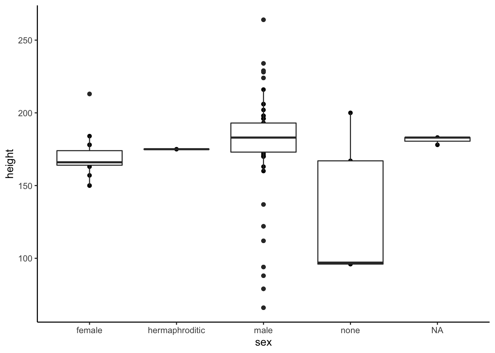
# Included the individual points on top
starwars %>%
ggplot(aes(x = sex, y = height)) +
geom_boxplot() +
geom_point() +
theme_classic()
# Warning: Removed 6 rows containing non-finite values (stat_boxplot).
# Warning: Removed 6 rows containing missing values (geom_point).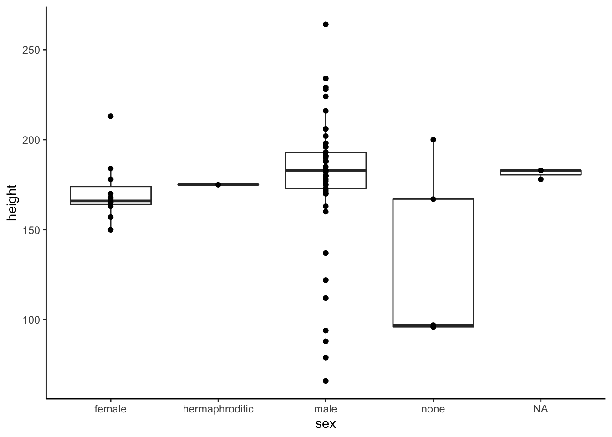
starwars %>%
ggplot(aes(x = sex, y = height)) +
geom_boxplot() +
geom_jitter(width = 0.2) +
theme_classic()
# Warning: Removed 6 rows containing non-finite values (stat_boxplot).
# Warning: Removed 6 rows containing missing values (geom_point).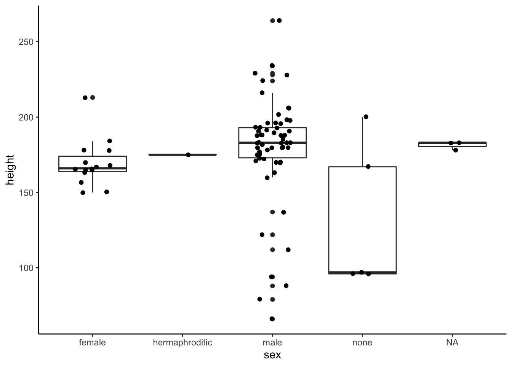
starwars %>%
ggplot(aes(x = sex, y = height)) +
geom_hline(aes(yintercept = 188),
linetype = 2,
color = "grey20") +
geom_boxplot(outlier.shape = NA) +
geom_jitter(width = 0.1,
size = 2,
alpha = 0.8,
shape = 21,
color = "grey20",
fill = "grey50") +
scale_y_continuous(breaks = c(100, 150, 188, 200, 250),
labels = c("100", "150", "Thomas", "200", "250"),
name = "Height") +
theme_classic()
# Warning: Removed 6 rows containing non-finite values (stat_boxplot).
# Warning: Removed 6 rows containing missing values (geom_point).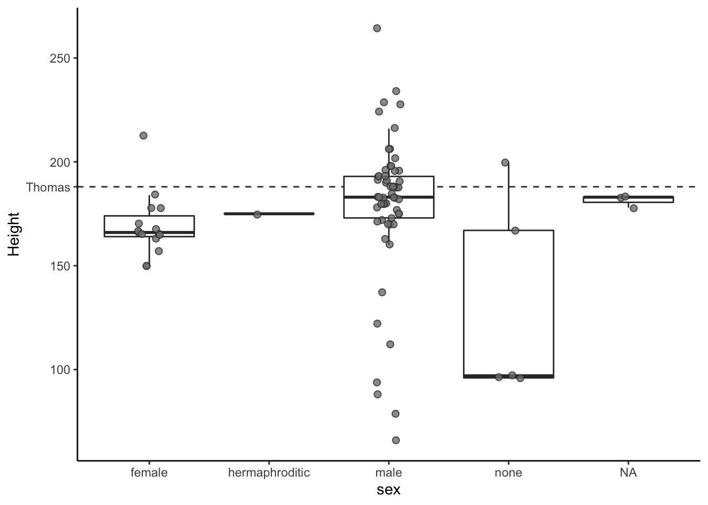
Violin plots can be a useful way to add information to your plot.
starwars %>%
filter(sex %in% c("male", "female")) %>%
ggplot(aes(x = sex, y = height)) +
geom_violin(fill = "azure2",
color = "grey20") +
geom_boxplot(fill = "azure2",
width = 0.2,
color = "grey20") +
theme_classic()
# Warning: Removed 4 rows containing non-finite values (stat_ydensity).
# Warning: Removed 4 rows containing non-finite values (stat_boxplot).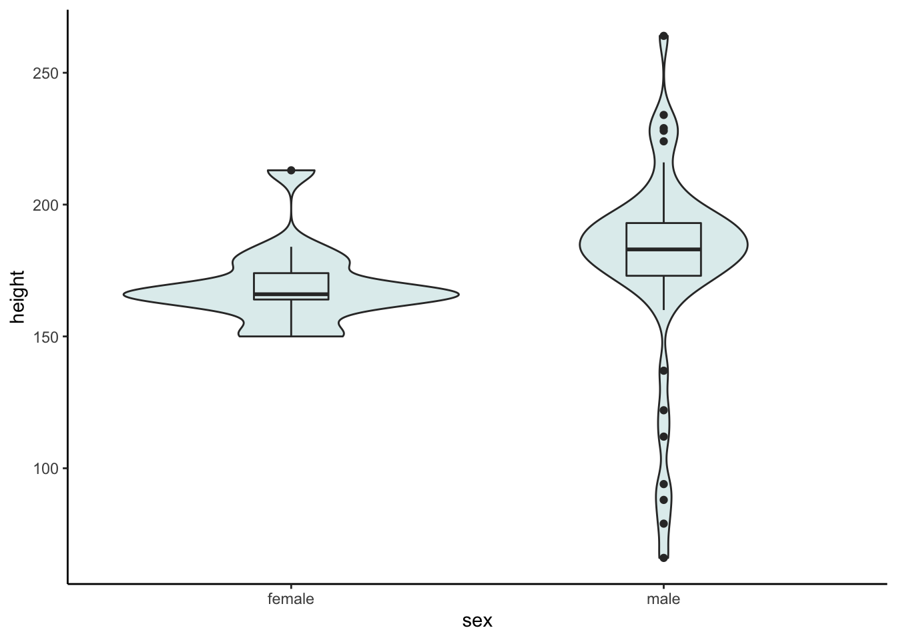
5.2.2 Distribution of birth year
starwars %>%
filter(birth_year < 200) %>%
ggplot() +
geom_histogram(aes(x = birth_year),
binwidth = 10)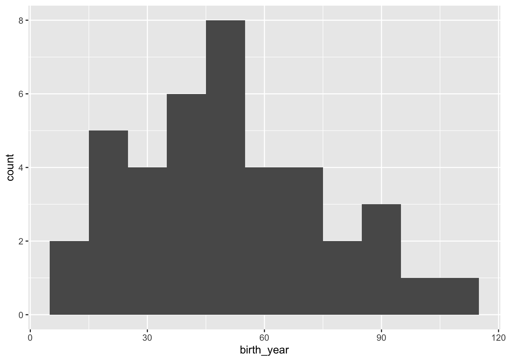
starwars %>%
filter(birth_year < 200) %>%
ggplot() +
geom_histogram(aes(x = birth_year),
color = "grey20",
fill = "grey50",
binwidth = 10) +
theme_classic()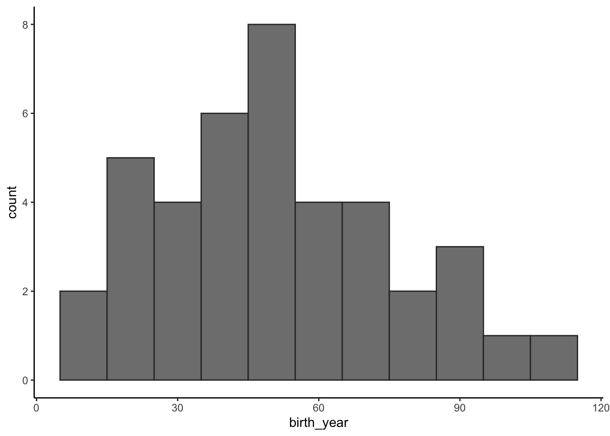
starwars %>%
filter(birth_year < 200) %>%
ggplot() +
geom_histogram(aes(x = birth_year),
color = "grey20",
fill = "grey50",
binwidth = 10) +
geom_density(aes(x = birth_year,
y = 10 * ..count..),
color = "grey20") +
ylab("count") +
theme_classic()5.2.3 Height & Mass
starwars %>%
filter(mass < 1000) %>%
mutate(species_h = ifelse(species == "Human", "Human", "Other")) %>%
ggplot() +
geom_point(aes(x = height,
y = mass,
fill = species_h),
size = 5,
alpha = 0.8,
color = "grey50",
shape = 21) +
theme_classic()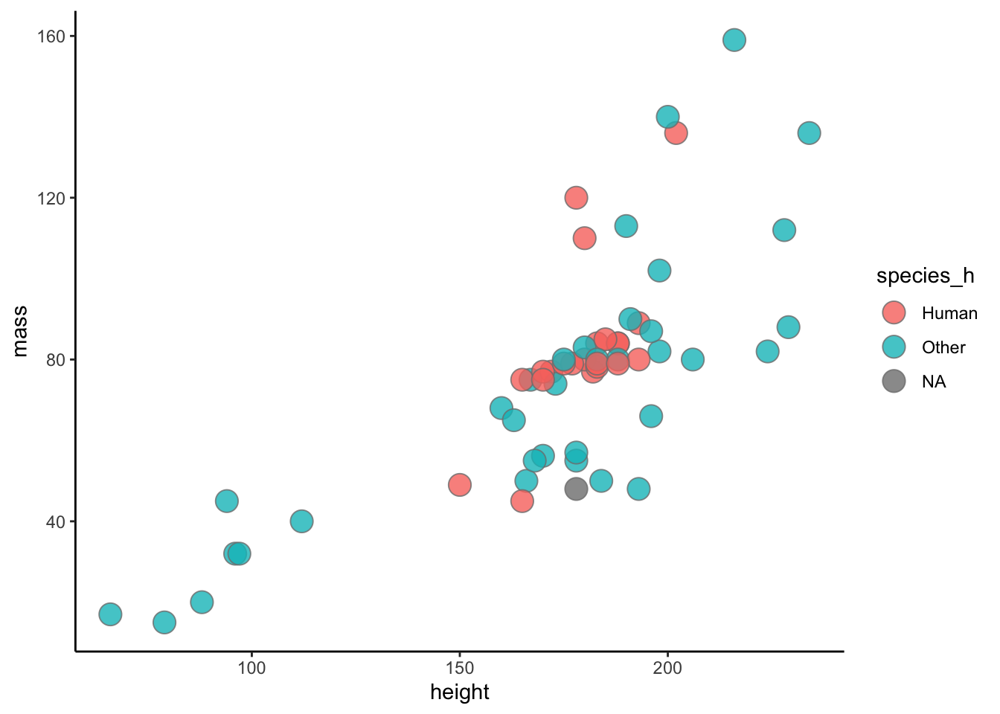
starwars %>%
filter(mass < 1000) %>%
mutate(species_h = ifelse(species == "Human", "Human", "Other")) %>%
arrange(desc(species_h)) %>%
ggplot() +
geom_point(aes(x = height,
y = mass,
fill = species_h),
size = 5,
alpha = 0.8,
color = "grey50",
shape = 21) +
theme_classic()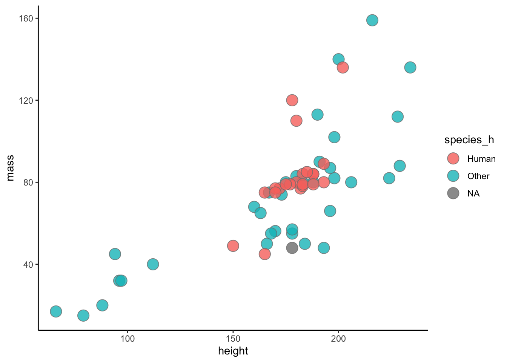
5.3 Plotly
There are packages that allow for interactive visualization on a webpage. For example plotly is pretty cool!
starwars_h <- starwars %>%
filter(mass < 1000) %>%
mutate(species_h = ifelse(species == "Human", "Human", "Other")) %>%
arrange(desc(species_h))
p <- ggplot() +
geom_point(data = starwars_h %>%
filter(species_h != "Human"),
aes(x = height,
y = mass,
fill = species_h),
size = 1,
alpha = 0.8,
color = "grey50",
shape = 21) +
geom_point(data = starwars_h %>%
filter(species_h == "Human"),
aes(x = height,
y = mass,
fill = species_h),
size = 3,
alpha = 0.8,
color = "grey50",
shape = 21) +
scale_fill_manual(values = c("#d66666", "#222222")) +
theme_classic()
p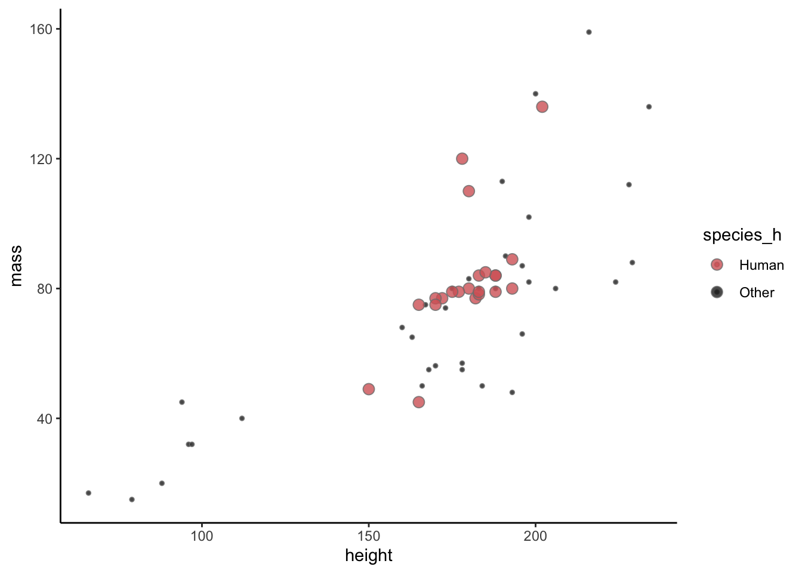
plotly::ggplotly(p, text = "text")You can also call out the specific names of characters with things like the ggrepel package.
friends <- c("Luke Skywalker",
"Leia Organa",
"Han Solo",
"Chewbacca",
"C-3PO",
"R2-D2",
"Obi-Wan Kenobi")
ggplot() +
geom_point(data = starwars_h,
aes(x = height,
y = mass,
fill = species_h),
size = 5,
alpha = 0.8,
color = "grey50",
shape = 21) +
ggrepel::geom_label_repel(data = starwars_h %>%
filter(name %in% friends),
aes(x = height,
y = mass,
label = name),
min.segment.length = 0.01) +
theme_classic()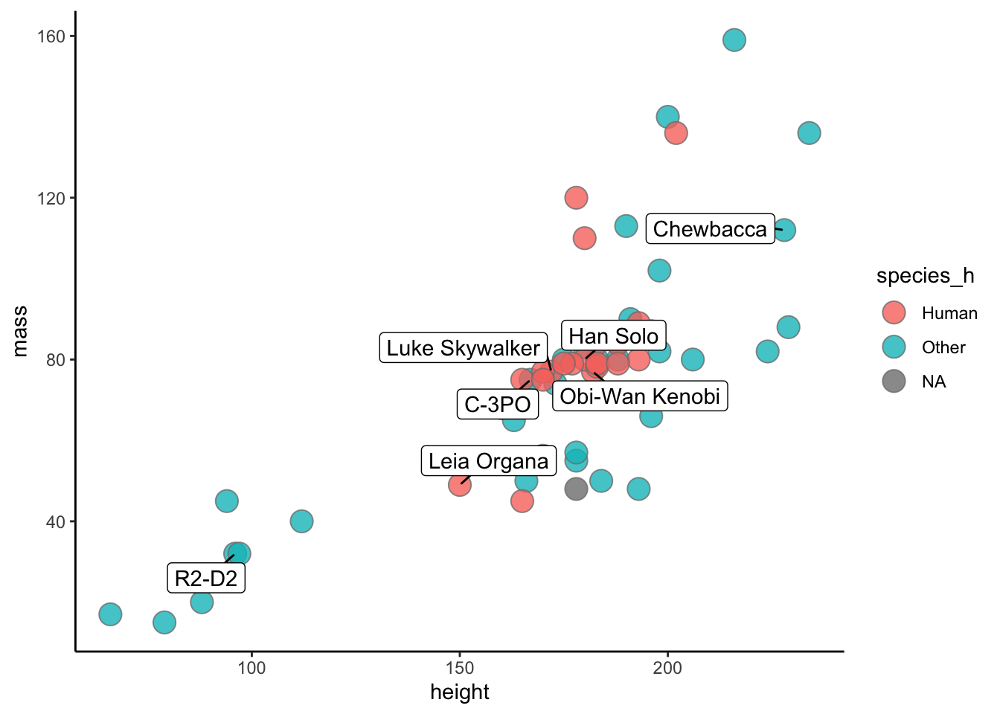
5.4 Star Wars Challenge
Take any data from the starwars data frame and make a compelling final figure. You should include units on axes, change the theme, make the legend useful, use a good color scheme, and any other changes you think will make it better.
We will meet back and talk about the figures together.